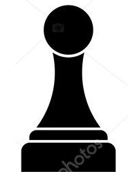
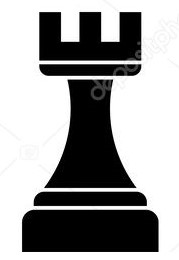
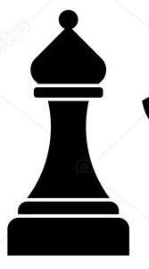
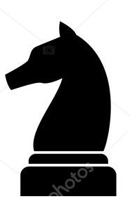
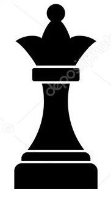
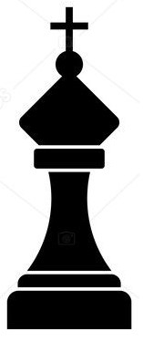

Satranç Oyunu Kuralları ve Satranç Tahtası Tasarımı
Satranç Nasıl Oynanır ?
Satrançta Hamleler Nelerdir ?
| Taşın Simgesi | |
|  | Piyonların hareketi ilk hamle haricinde daima ileriye doğru bir kare ilerleme şeklindedir. Piyonlar sadece ilk hamlelerinde iki kare ileri gidebilir. Geriye doğru hareket edemeyen tek taş piyondur. Piyonların önlerinde başka bir taş bulunması durumunda, piyonlar hareket edemez. Piyon çaprazında bulunan rakip taşları alarak da çapraz olarak ileri gidebilir. |
|  | Kaleler bulundukları kare üzerinde ileriye, geriye, sağa ya da sola hareket edebilmektedir. Kaleler de gittikleri karedeki rakip taşı almaktadır. |
|  | Filler açık ve koyu renk karelerde olmak üzere her oyuncuda iki adet bulunur. Bulunduğu karenin çaprazlarında hareket eder. |
|  | At taşların üzerinden geçebilen tek taştır. Atlar bulundukları kareden L şekli çizerek toplamda 3 kare ilerler. At hamlesi ile ilgili olarak aklınızda bulundurmanız gereken bir ipucu, beyaz karede olan atın hamlesinin siyah kareye, siyah karede bulunan atın hamlesinin ise beyaz kareye olacağıdır. Aşağıdaki görselde siyah ve beyaz atların gidebilecekleri kareler, siyah noktalar ile gösterilmiştir. Atlar da tıpkı filler gibi gittikleri karede rakip taş bulunuyorsa o taşı alır. |
|  | Satranç taşlarıiçinde en fazla hareket özelliğine sahip olan taş vezirdir. Vezir, bulunduğu kare üzerinde yatay, dikey ya da çapraz olarak hareket edebilir. Veziri, kale ve filin hareketlerini tek başına yapabilen bir taş olarak da düşünebilirsiniz. Vezir de gittiği karede rakip taş varsa onu alabilmektedir. |
|  | Satranç taşlarıiçinde en kısıtlı hamle yeteneğine sahip olan taş şahtır. Şah sadece bulunduğu karenin bitişiğindeki karelere hareket edebilir. |
Satranç Tahtası Tasarımı
| A | B | C | D | E | F | G | H | |
| 8 | | | | | ||||
| 7 | | | | | ||||
| 6 | | | | | ||||
| 5 | | | | | ||||
| 4 | | | | | ||||
| 3 | | | | | ||||
| 2 | | | | | ||||
| 1 | | | | |